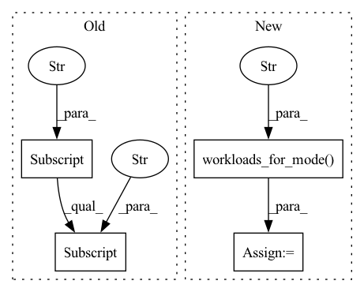

Pattern ID :5548
Before Change
first_trial_id = first_trial["id"]
assert len(first_trial["steps"]) == 2
first_checkpoint_id = first_trial["steps"][-1]["checkpoint"]["id"]
config_obj = conf.load_config(conf.tutorials_path("mnist_pytorch/const.yaml"))
// Change the search method to random, and add a source trial ID to warmAfter Change
first_trial_id = first_trial.trial.id
assert len(first_trial.workloads or []) == 4
checkpoints = exp.workloads_for_mode( first_trial.workloads, "checkpoint" )
first_checkpoint = checkpoints[-1]
assert first_checkpoint and first_checkpoint.checkpoint
first_checkpoint_uuid = first_checkpoint.checkpoint.uuid
config_obj = conf.load_config(conf.tutorials_path("mnist_pytorch/const.yaml"))
In pattern: SUPERPATTERN
Frequency: 3
Non-data size: 4
Instances Fragment ID: 19572120
Project Name: determined-ai/determined
Commit Name: 1b3e764118242255b4f3fb32c2a969cf2ae752c5
Time: 2022-03-15
Author: nick.doiron@hpe.com
File Name: e2e_tests/tests/experiment/test_pytorch.py
M Class Name: AnonimousClass
N Class Name: AnonimousClass
M Method Name: test_pytorch_const_warm_start(0)
N Method Name: test_pytorch_const_warm_start(0)
M Parent Class:
N Parent Class:
M File Name: e2e_tests/tests/experiment/test_pytorch.py
N File Name: e2e_tests/tests/experiment/test_pytorch.py
M Start Line: 77
M End Line: 101
N Start Line: 78
N End Line: 105
Before Change
trial = exp.experiment_trials(experiment_id)[0]
last_validation = trial["steps"][len(trial["steps"]) - 1]["validation"]
metrics = last_validation["metrics"]["validation_metrics"]
label_sum = 2 * sum(range(16))
assert metrics["label_sum_fn"] == label_sum
assert metrics["label_sum_cls"] == label_sum
After Change
)
trial = exp.experiment_trials(experiment_id)[0]
last_validation = exp.workloads_for_mode( trial.workloads, "validation" ) [-1].validation
assert last_validation and last_validation.metrics
metrics = last_validation.metrics
label_sum = 2 * sum(range(16))
assert metrics["label_sum_fn"] == label_sum
assert metrics["label_sum_cls"] == label_sum Fragment ID: 19572118
Project Name: determined-ai/determined
Commit Name: 1b3e764118242255b4f3fb32c2a969cf2ae752c5
Time: 2022-03-15
Author: nick.doiron@hpe.com
File Name: e2e_tests/tests/experiment/test_tf_estimator.py
M Class Name: AnonimousClass
N Class Name: AnonimousClass
M Method Name: test_custom_reducer_distributed(2)
N Method Name: test_custom_reducer_distributed(2)
M Parent Class:
N Parent Class:
M File Name: e2e_tests/tests/experiment/test_tf_estimator.py
N File Name: e2e_tests/tests/experiment/test_tf_estimator.py
M Start Line: 105
M End Line: 107
N Start Line: 108
N End Line: 111
Before Change
first_trial_id = first_trial["id"]
assert len(first_trial["steps"]) == 1
first_checkpoint_id = first_trial["steps"][0]["checkpoint"]["id"]
config_obj = conf.load_config(conf.fixtures_path("mnist_estimator/single.yaml"))
config_obj["searcher"]["source_trial_id"] = first_trial_idAfter Change
first_trial_id = first_trial.trial.id
assert len(first_trial.workloads or []) == 3
checkpoint_workloads = exp.workloads_for_mode( first_trial.workloads, "checkpoint" )
assert len(checkpoint_workloads)
assert checkpoint_workloads[0].checkpoint
first_checkpoint_uuid = checkpoint_workloads[0].checkpoint.uuid
config_obj = conf.load_config(conf.fixtures_path("mnist_estimator/single.yaml"))
Fragment ID: 19572117
Project Name: determined-ai/determined
Commit Name: 1b3e764118242255b4f3fb32c2a969cf2ae752c5
Time: 2022-03-15
Author: nick.doiron@hpe.com
File Name: e2e_tests/tests/experiment/test_tf_estimator.py
M Class Name: AnonimousClass
N Class Name: AnonimousClass
M Method Name: test_mnist_estimator_warm_start(1)
N Method Name: test_mnist_estimator_warm_start(1)
M Parent Class:
N Parent Class:
M File Name: e2e_tests/tests/experiment/test_tf_estimator.py
N File Name: e2e_tests/tests/experiment/test_tf_estimator.py
M Start Line: 59
M End Line: 63
N Start Line: 59
N End Line: 66